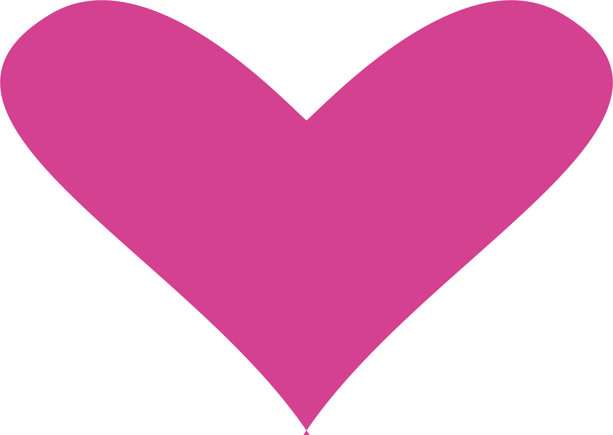
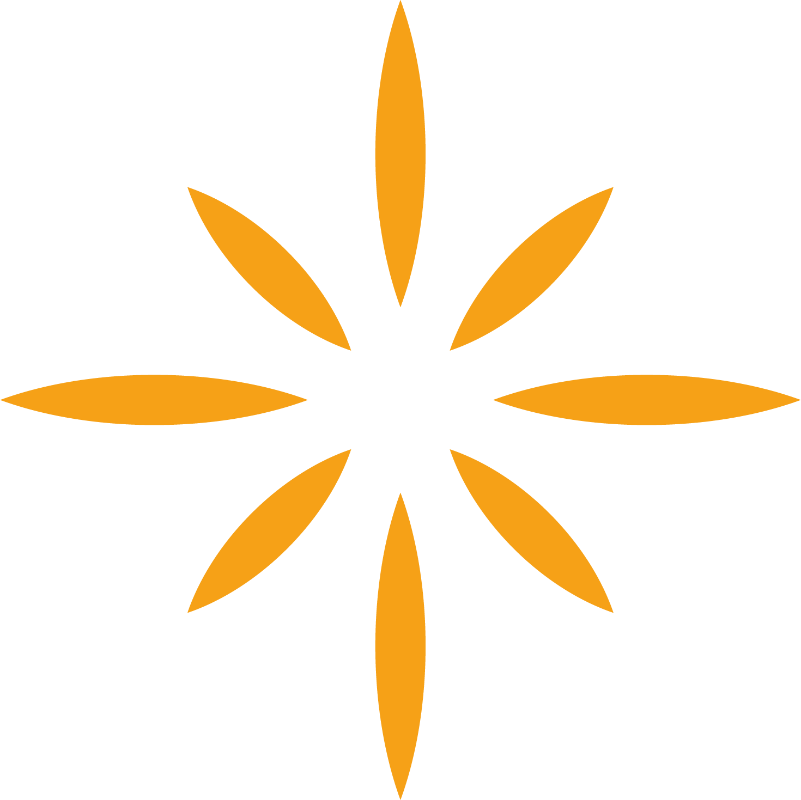
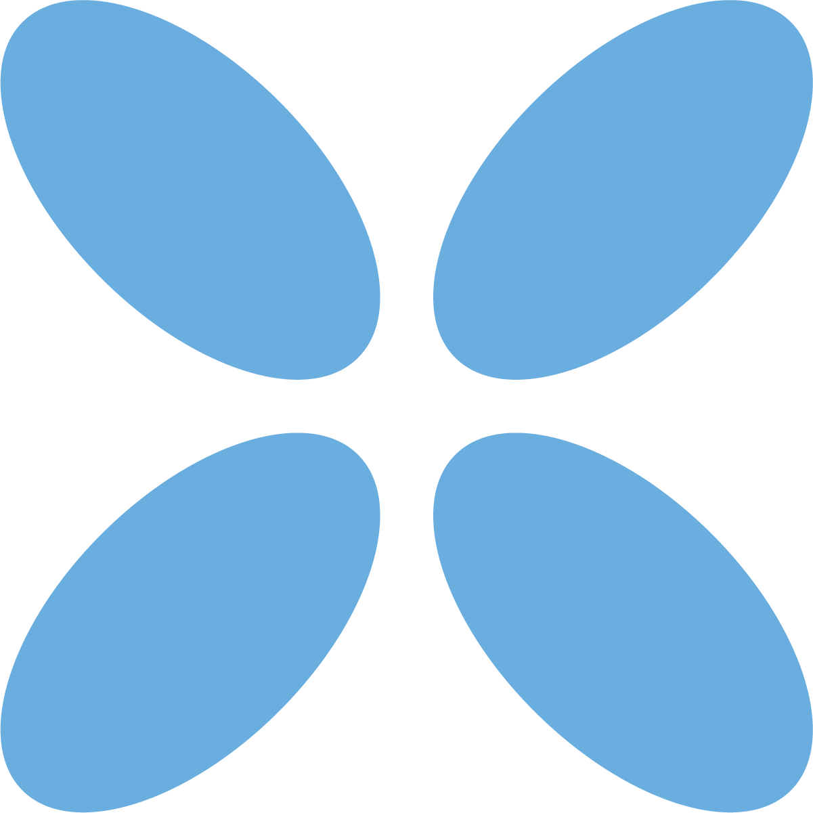
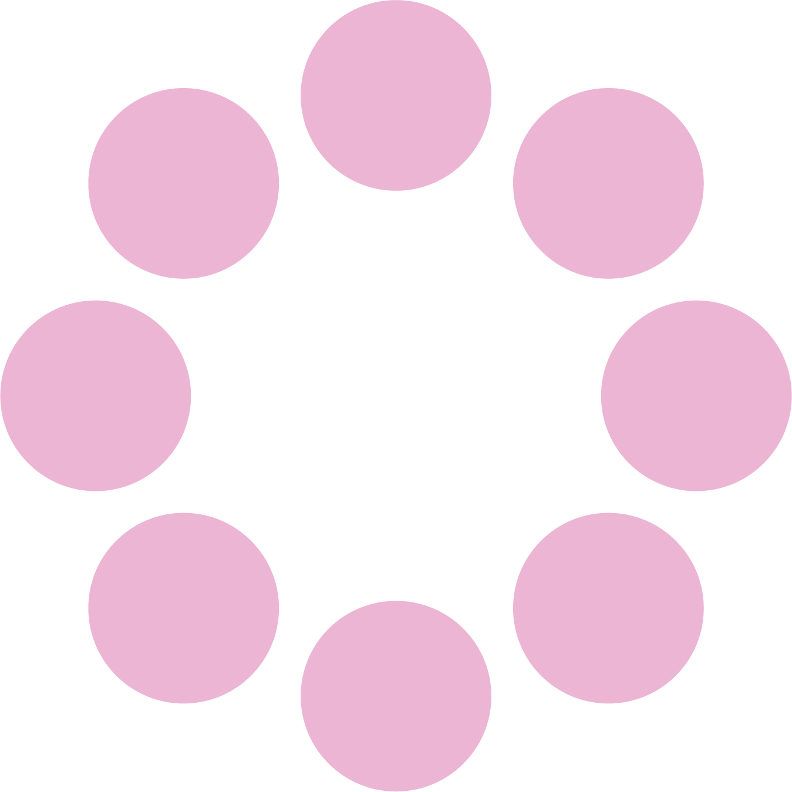

Crear para expresar
Dar forma a lo que sentimos a través del color, la palabra, la textura y el gesto creativo.


Amara es un espacio creado para reconectar contigo misma a través de la creatividad. Un lugar donde parar, sentir y explorar sin presión, sin juicios.
Aquí, el bienestar no es una meta exigente, sino un proceso íntimo y personal. A través de terapias creativas, experiencias y pequeños rituales, Amara te invita a escucharte, expresarte y entenderte desde otro lugar.
No necesitas saber crear, solo permitirte hacerlo.
Porque a veces, lo que no sabemos decir con palabras… encuentra su forma en lo que creamos.
Bienestar creativo

Dar forma a lo que sentimos a través del color, la palabra, la textura y el gesto creativo.

Un momento para liberar tensión, dejar salir lo que pesa y habitar las emociones sin juicio.

Una pausa consciente para volver al cuerpo, escuchar la intuición y reencontrarse con una misma.

Un espacio seguro donde compartir procesos, sentirse comprendida y crear desde la comunidad.
Crear también es escucharte.
Descubre los kits¡No te lo puedes perder!
Un fin de semana para escucharte, crear y volver a ti.

Una experiencia íntima en una casa rural para mujeres que buscan sentirse acompañadas, comprender mejor su relación con el cuerpo y expresar lo que muchas veces cuesta poner en palabras. A través de actividades creativas, charlas con profesionales de ginecología y espacios de conversación en grupo reducido, Amara propone un encuentro desde la calma, la sororidad y el autocuidado.
No estás sola. Crear también es cuidarse.

Materiales y propuestas guiadas para crear en casa, bajar el ritmo y conectar contigo.
Ver más
Sesiones cercanas para explorar emociones con arte, calma y acompanamiento desde casa.
Ver más
Encuentros, convivencias y espacios de comunidad para crear, expresarte y sentirte acompanada.
Ver más*****
En cada actividad me senti acompanada. Sali con calma, inspiracion y muchas ganas de seguir creando.
Sofia M.*****
Una pausa preciosa para escucharme sin prisa. El ambiente fue muy cuidado y sali mas ligera.
Daniela R.*****
Aprendi ejercicios sencillos para expresar lo que siento y cuidar mi bienestar con creatividad.
Carolina P.*****
Me senti en un espacio seguro, bonito y cercano. Repetiria la experiencia sin dudarlo.
Amara G.*****
La sesion me ayudo a reconectar con mi cuerpo desde un lugar amable, creativo y tranquilo.
Lucia T.Únete a nuestra comunidad de arte terapia y recibe inspiración, recursos y beneficios exclusivos.